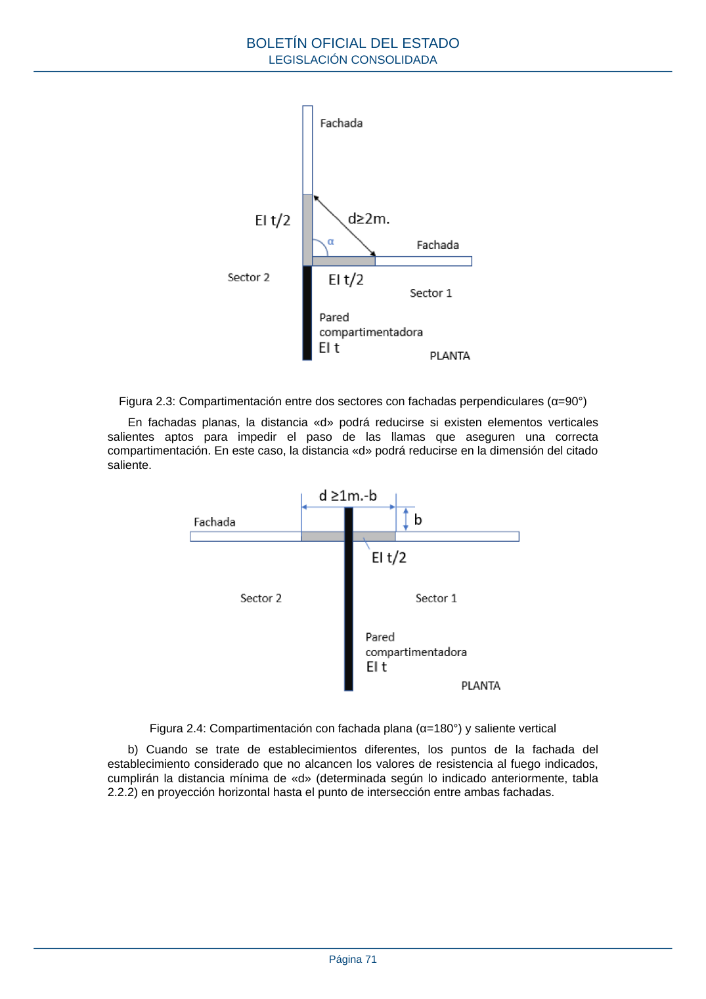

RSCIEI · edición 2025-04-10 · capa asociada
Documento RSCIEI-asociada · SHA-256 del PDF 85aa0af25d51e5b58d8975a4eefbf76d3f57a8933445cfe814ae9c4818a2e3e7
Página física 71 de 108.
Copia fiel del PDF fuente · Fuente oficial
Ficha de la disposición en la fuente oficial
Texto extraído y reorganizado: Basado en datos de la Agencia Estatal Boletín Oficial del Estado. PDF reproducido: Fuente de los datos: Agencia Estatal Boletín Oficial del Estado.
Formato: Texto de la página (Markdown)
Figura 2.3: Compartimentación entre dos sectores con fachadas perpendiculares (α=90°) En fachadas planas, la distancia «d» podrá reducirse si existen elementos verticales salientes aptos para impedir el paso de las llamas que aseguren una correcta compartimentación. En este caso, la distancia «d» podrá reducirse en la dimensión del citado saliente. Figura 2.4: Compartimentación con fachada plana (α=180°) y saliente vertical b) Cuando se trate de establecimientos diferentes, los puntos de la fachada del establecimiento considerado que no alcancen los valores de resistencia al fuego indicados, cumplirán la distancia mínima de «d» (determinada según lo indicado anteriormente, tabla 2.2.2) en proyección horizontal hasta el punto de intersección entre ambas fachadas. BOLETÍN OFICIAL DEL ESTADO LEGISLACIÓN CONSOLIDADA Página 71
